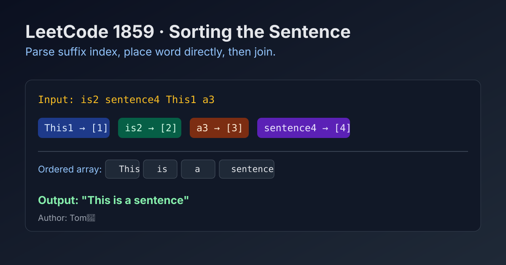

LeetCode 1859: Sorting the Sentence (Index-Suffix Placement)
LeetCode 1859StringParsingToday we solve LeetCode 1859 - Sorting the Sentence.
Source: https://leetcode.com/problems/sorting-the-sentence/

English
Problem Summary
You are given a shuffled sentence where each word has a trailing digit from 1..9 indicating its original position, such as "is2 sentence4 This1 a3". Reconstruct and return the correctly ordered sentence without the trailing digits.
Key Insight
Each word already tells us exactly where it belongs. So we do not need sorting by comparison; we only need one pass to place words by index into a fixed array, then join.
Algorithm
- Split the input string by spaces into tokens.
- For each token, let last char be position digit k.
- Strip that digit and place the clean word at ans[k - 1].
- Join ans with spaces.
Complexity Analysis
Let n be number of characters in the sentence.
Time: O(n).
Space: O(n) for split parts and output array.
Common Pitfalls
- Forgetting to remove the trailing digit before storing the word.
- Treating the last character as ASCII code instead of numeric digit.
- Off-by-one mistake between index k and array position k-1.
Reference Implementations (Java / Go / C++ / Python / JavaScript)
class Solution {
public String sortSentence(String s) {
String[] parts = s.split(" ");
String[] ordered = new String[parts.length];
for (String token : parts) {
int pos = token.charAt(token.length() - 1) - '0';
ordered[pos - 1] = token.substring(0, token.length() - 1);
}
return String.join(" ", ordered);
}
}import "strings"
func sortSentence(s string) string {
parts := strings.Split(s, " ")
ordered := make([]string, len(parts))
for _, token := range parts {
pos := int(token[len(token)-1] - '0')
ordered[pos-1] = token[:len(token)-1]
}
return strings.Join(ordered, " ")
}class Solution {
public:
string sortSentence(string s) {
vector<string> parts;
string cur;
for (char c : s) {
if (c == ' ') {
parts.push_back(cur);
cur.clear();
} else {
cur.push_back(c);
}
}
parts.push_back(cur);
vector<string> ordered(parts.size());
for (const string& token : parts) {
int pos = token.back() - '0';
ordered[pos - 1] = token.substr(0, token.size() - 1);
}
string ans;
for (int i = 0; i < (int)ordered.size(); ++i) {
if (i) ans += ' ';
ans += ordered[i];
}
return ans;
}
};class Solution:
def sortSentence(self, s: str) -> str:
parts = s.split()
ordered = [""] * len(parts)
for token in parts:
pos = int(token[-1])
ordered[pos - 1] = token[:-1]
return " ".join(ordered)var sortSentence = function(s) {
const parts = s.split(" ");
const ordered = new Array(parts.length);
for (const token of parts) {
const pos = Number(token[token.length - 1]);
ordered[pos - 1] = token.slice(0, token.length - 1);
}
return ordered.join(" ");
};中文
题目概述
给你一个被打乱顺序的句子，每个单词末尾带有一个数字（1..9），表示它在原句中的位置，例如 "is2 sentence4 This1 a3"。要求还原出正确顺序的句子，并去掉末尾数字。
核心思路
末尾数字已经直接给出目标位置，因此不需要比较排序。只需按位置把单词放入结果数组，再拼接即可。
算法步骤
- 用空格分割得到所有 token。
- 取每个 token 的最后一个字符作为位置 k。
- 去掉末尾数字，把单词放到 ans[k-1]。
- 最后用空格拼接结果数组。
复杂度分析
设句子总长度为 n。
时间复杂度：O(n)。
空间复杂度：O(n)。
常见陷阱
- 忘记去掉单词末尾数字。
- 把末尾字符当字符码使用而不是数字值。
- 下标偏移错误，k 应映射到 k-1。
多语言参考实现（Java / Go / C++ / Python / JavaScript）
class Solution {
public String sortSentence(String s) {
String[] parts = s.split(" ");
String[] ordered = new String[parts.length];
for (String token : parts) {
int pos = token.charAt(token.length() - 1) - '0';
ordered[pos - 1] = token.substring(0, token.length() - 1);
}
return String.join(" ", ordered);
}
}import "strings"
func sortSentence(s string) string {
parts := strings.Split(s, " ")
ordered := make([]string, len(parts))
for _, token := range parts {
pos := int(token[len(token)-1] - '0')
ordered[pos-1] = token[:len(token)-1]
}
return strings.Join(ordered, " ")
}class Solution {
public:
string sortSentence(string s) {
vector<string> parts;
string cur;
for (char c : s) {
if (c == ' ') {
parts.push_back(cur);
cur.clear();
} else {
cur.push_back(c);
}
}
parts.push_back(cur);
vector<string> ordered(parts.size());
for (const string& token : parts) {
int pos = token.back() - '0';
ordered[pos - 1] = token.substr(0, token.size() - 1);
}
string ans;
for (int i = 0; i < (int)ordered.size(); ++i) {
if (i) ans += ' ';
ans += ordered[i];
}
return ans;
}
};class Solution:
def sortSentence(self, s: str) -> str:
parts = s.split()
ordered = [""] * len(parts)
for token in parts:
pos = int(token[-1])
ordered[pos - 1] = token[:-1]
return " ".join(ordered)var sortSentence = function(s) {
const parts = s.split(" ");
const ordered = new Array(parts.length);
for (const token of parts) {
const pos = Number(token[token.length - 1]);
ordered[pos - 1] = token.slice(0, token.length - 1);
}
return ordered.join(" ");
};
Comments